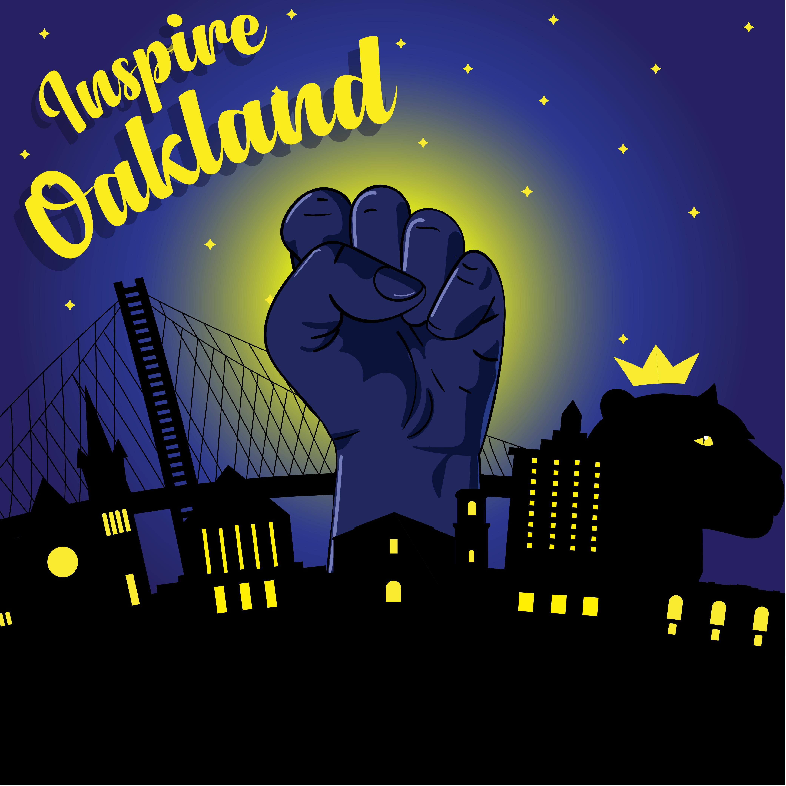

This year, I was lucky enough to have the opportunity to participate in a design competition in Oakland. The design was prompted bythe BRIDGEGOOD organization. The organization aims to give recognition to overlooked designers and give back to the community within Oakland.
My design entree was good enough for me to place within the top 6 designs (3rd place). I was able to go out to the Adobe Headqquarters and present my design to design prefessionals within the tech industry. Here is my design.

When addressing the prompt of “What about Oakland inspires you?” a multitude of thoughts came to my mind. One thing I really wanted to address was the concept of black elegance and black perseverance in Oakland because, I myself, am an African American. To get a better grasp on the subject of being black in Oakland, I conducted a research phase in which I asked relatives, friends, and others that have lived in Oakland for an extended period of time. When reviewing my collected data, I noticed that a lot of the older black participants spoke much of the obstacles that came with being black in Oakland, and how those obstacles were overcome, giving a bright pathway towards black excellence (lots of exchange about the birth of the Black Panther Movement took place as well). I then began sketching a few drafts of how I wanted to execute this kind of emotion. After a few iterations on a couple of rough sketches, I came to the decision of what you are seeing now; the blue “black power” fist emerging from the city of Oakland. To dive deeper into my design decisions, I want to start off by mentioning the reasoning behind the fist and its color. Because I am trying to illustrate the roots of black elegance in Oakland, I gave the fist the color blue. This color roots from the word ‘negus’. Negus’ origin is from Ethiopia, with its basis being a title of royalty. This was my way of reminding other people about the power that comes with the black heritage and history. Next, I give this fist a sense of being a source of light for the city of Oakland. This is because of the perseverance of the black power movement, which not only gave Oakland a theoretical light of awareness, but the entire nation as well. Finally, I added a couple of important pieces of architecture that were representative of Oakland to provide character; the Alameda County Superior Court (located at the front left), the Bay Bridge (located in the background), and the Oakland City Hall clock tower (located at the front right). As some final thoughts, I created this piece to establish a reminisce of the history behind Oakland and why it is so rich in culture. I hope that it can inspire people to persevere, no matter how many or how large the obstacles are.